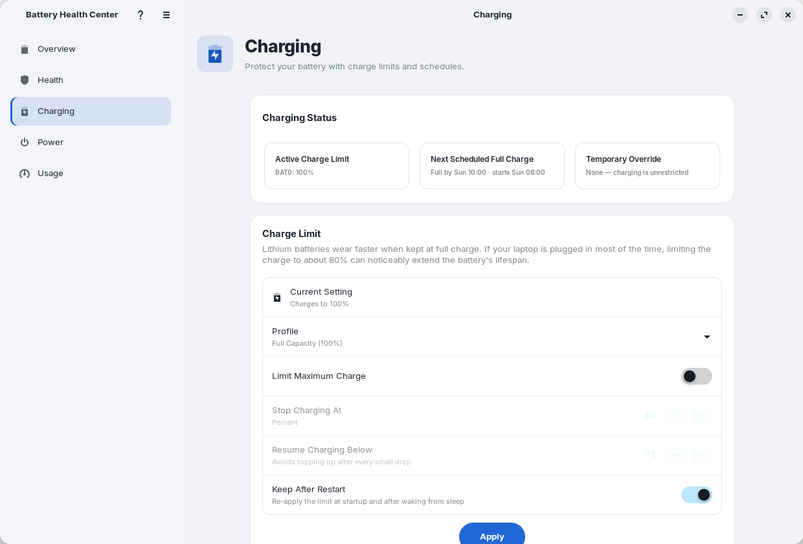
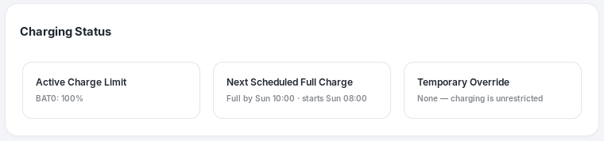
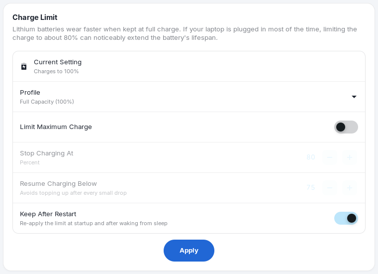
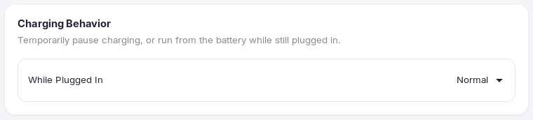

Charging
Lithium batteries wear faster when they sit at full charge. If your laptop is plugged in most of the day, limiting the charge to about 80% can noticeably extend the battery's lifespan. This page sets that limit.

Hardware. Charge limits need firmware support that Linux exposes as charge_control_end_threshold. If your laptop does not have it, this page shows Not supported on this laptop with the reason, and the rest of the app works normally.
Charging status#

- Active Charge Limit: where charging stops for each battery. "Charging will stop at 80%", or "Charge limit removed" when there is no limit.
- Next Scheduled Full Charge: when your schedule will next lift the limit, as "Full by Mon 07:30 · starts Mon 05:30". It says "Save a charge limit below 100% to use scheduled charging" when a schedule would have no limit to lift, and "Learning your routine" while optimized charging is still gathering data.
- Temporary Override: "None" normally. During a one-time full charge it says "One-time full charge", with the limit that comes back; during a scheduled full charge it says "Scheduled full charge".
Charge limit#

Profiles#
The Profile menu sets both numbers at once:
| Profile | Stops charging at | Resumes below | Best for |
|---|---|---|---|
| Maximum Lifespan (60%) | 60% | 55% | Plugged in most of the time. The least wear. |
| Balanced (80%) | 80% | 75% | A good everyday balance. |
| Full Capacity (100%) | 100% | No limit | The longest time away from the charger. |
| Custom | Your number | Your number | Your own settings below. |
Your own numbers#
- Limit Maximum Charge turns the limit on or off. When it is off, the battery charges to 100%.
- Stop Charging At (a percentage) is the level where charging stops.
- Resume Charging Below is the level where charging starts again. Keeping a gap avoids topping up after every small drop. It has to be below the stop level.
- Keep After Restart re-applies the limit when the computer starts and after it wakes from sleep. Without it the firmware may forget the limit when it restarts. A saved limit is also required for the schedule.
Applying the limit#
- Pick a profile, or change the numbers.
- Choose Apply.
- Enter your password in the system prompt. Changing a charge limit writes to the battery's firmware settings, so it needs administrator permission. The prompt is the standard PolicyKit one.
- A message confirms "Charging will stop at 80%" (or "Charge limit removed").
Tip. Not every laptop has a separate resume level. When yours does not, Resume Charging Below is not shown. The page only offers the controls your laptop supports.
Charge to 100% now#
Need a full battery for a trip or a long day away from the charger? While a limit below 100% is in force, a Charge to 100% Now row appears with a Charge Now button.
- Connect the charger and choose Charge Now.
- The Overview says "Charging to 100%" and the Temporary Override card says "One-time full charge".
- When the battery is full, or when you unplug, your limit comes back by itself. Choose Back to your charge limit if you change your mind earlier.
Charging behavior#

The While Plugged In menu is a temporary override for special situations:
| Choice | What it does |
|---|---|
| Normal | Charges as usual, following your limit. |
| Pause Charging | The laptop stays plugged in and runs from the charger without charging the battery. |
| Run on Battery | The laptop runs from the battery even though the charger is connected. Useful for testing how long the battery lasts. |
Choose Normal to go back. This control only appears when your laptop supports it.